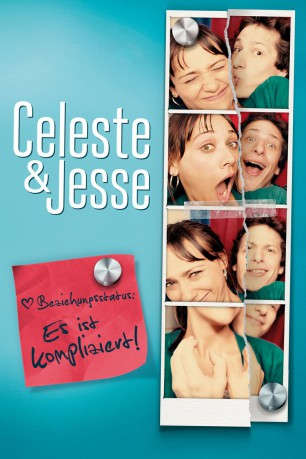
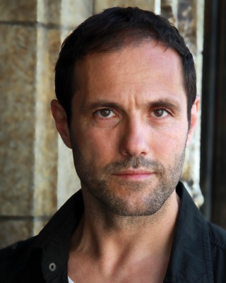

#1752 Celeste & Jesse Beziehungsstatus: Es ist kompliziert!
Alternativ: Celeste & Jesse Forever
 
 IMDB-Wertung: 6.6 / 10
IMDB-Wertung: 6.6 / 10  Metascore: 59
Metascore: 59 
Celeste und Jesse sind ein äußerst fortschrittliches Ex-Ehepaar. Trotz Trennung leben sie noch immer Tür an Tür, sind über das Tun und Lassen des Anderen stets informiert und verbringen fast jede freie Minute miteinander. Sie verstehen sich so gut, dass selbst ihre besten Freunde den innigen Umgang der beiden ‚offiziell Getrennten‘ nicht mehr ertragen können. Als die erfolgreiche und selbstbewusste Celeste den mal wieder arbeitslosen und wenig zielstrebigen Jesse um die Scheidung bittet, beginnen jedoch die Schwierigkeiten: Jesse, der Celeste immer noch liebt, will keinen endgültigen Schlussstrich ziehen. Doch auch Celeste merkt mit der Zeit, dass sie Jesse nicht wirklich gehen lassen will – schon gar nicht mit einer neuen Frau an seiner Seite.
Jahr: 2012
Dauer: 92 Minuten
FSK: 0
Land: USA Studio: Sony Pictures ClassicsTonspuren: DTS - ,
Untertitel: Deutsch,
Auflösung: 1080p (1920x800) Größe: 5345 MB
Genre: Drama, Komödie, Liebe
Regisseur: Lee Toland Krieger
Drehbuch: Rashida Jones, Will McCormack
Soundtrack: Zach Cowie, Sunny Levine
Darsteller:
 Rashida Jones als Celeste
Rashida Jones als Celeste Andy Samberg als Jesse
Andy Samberg als Jesse Ari Graynor als Beth
Ari Graynor als Beth Eric Christian Olsen als Tucker
Eric Christian Olsen als Tucker Rob Huebel als Business Man
Rob Huebel als Business Man Elijah Wood als Scott
Elijah Wood als Scott- Shira Lazar als Herself
 Will McCormack als Skillz
Will McCormack als Skillz- Kate Krieger als Yogurt Girl
-  Andreas Beckett als German Announcer
 Chris Messina als Paul
Chris Messina als Paul Rebecca Dayan als Veronica
Rebecca Dayan als Veronica Emma Roberts als Riley
Emma Roberts als Riley- Janel Parrish als Savannah
 Rich Sommer als Max
Rich Sommer als Max Rafi Gavron als Rupert
Rafi Gavron als Rupert Chris Pine als Rory Shenandoah
Chris Pine als Rory Shenandoah- Matthew Del Negro als Nick
 Lenny Jacobson als Peter Pan
Lenny Jacobson als Peter Pan- Chris D'Elia als Snow White
 Lauren Sanchez als News Reporter
Lauren Sanchez als News Reporter- Ashli Dowling als Bartender
- Robert Kya-Hill als Priest
- Amanda MacLachlan als Bridesmaid
 Sarah Wright als Bridesmaid
Sarah Wright als Bridesmaid Joel Michaely als Gay Man #1
Joel Michaely als Gay Man #1 Philip Pavel als Gay Man #2
Philip Pavel als Gay Man #2- Louisa Kendrick als Celeste's Lawyer
 Jason Antoon als Young Man
Jason Antoon als Young Man- Jesse Dufault als Wedding Guest - Dancer , uncredited
- Shannon Hartman als Wedding Guest - Dancer , uncredited
- Eva La Dare als Fire Dancer , uncredited
- John Joseph Lindsey als Wedding Ceremony / Party Guest , uncredited
- Kim Mahair als Yoga Instructor , uncredited
- Susan T. Travers als Wedding Guest , uncredited
- Matthias Steiner als Himself
- Jessica Joffe als Saleswoman
- Zoë Hall als Waitress
- Sarah Haskins als Parent
- Willy Mac als Bear
- Jordan Reid als Bridesmaid
- Kaitlyn Bouchard als Wedding Guest , uncredited
- Kimmie Johnson als Wedding Guest , uncredited
- Sun Jae Kim als Office Clerk , uncredited
- Jessica Mathis als Party Mermaid , uncredited
- Cristina Moody als Wedding Guest , uncredited
- Patrick Pedraza als Pat , uncredited
- Mason Sharrow als Cafe Patron , uncredited
Datei: X:\2012(A-F)\Celeste & Jesse Beziehungsstatus Es ist kompliziert! (2012, FSKo.Al., 1920x800).mkv seit 16.08.2015
Festplatte: HD 2012(A-M)
 Es gibt insgesamt 102 Filme in der Gruppe '2012(A-F)'
Es gibt insgesamt 102 Filme in der Gruppe '2012(A-F)'